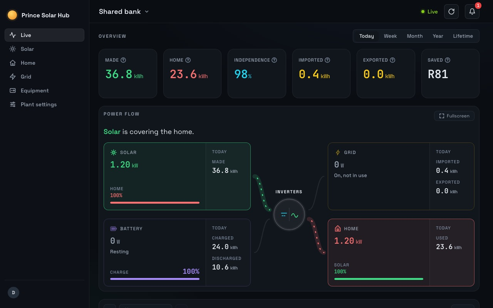

SunSynk app error or login failed?
Errors like “request timeout” or “service error” usually mean SunSynk’s servers are busy, not that your system is broken. The inverter keeps running on its own. Wait a while, then sign in again.

Why it happens
- SunSynk’s servers are busy or being updated. Many owners see errors at the same time.
- An old sign-in. After an app update, the saved session can stop working.
- Your network. Some Wi-Fi or mobile networks block or slow the app.
What to do
- Wait 15 minutes and try again. Most errors clear on their own.
- Check PowerForum or MyBroadband. If others report it too, it is SunSynk.
- Switch between Wi-Fi and mobile data.
- Sign out, clear the app’s data or reinstall it, and sign in again.
- Login fails with the right password? Reset it from SunSynk’s sign-in page.
Nothing here needs your installer or a change to the inverter.
How Prince Solar Hub helps
When SunSynk is down, Prince Solar Hub can’t read new data either. It emails you when SunSynk stops answering and again when it’s back, so you know it isn’t your system. Then it fetches the readings it missed, if SunSynk has them.
More help
- SunSynk app not updatingUsually the logger has lost its Wi-Fi.
- SunSynk logger keeps going offlineWeak Wi-Fi, a new router, or a power cut.
- Gaps in your SunSynk historyWhy hours go missing, and how to keep them.
- Get an alert when the power goesWhy the SunSynk push is easy to miss.
- Share your SunSynk plant as a VisitorLet someone see your system without changing it.
Questions
Is my inverter broken?
Almost never. The inverter runs on its own. The error is between your phone and SunSynk’s servers.
Will I lose readings while the app shows errors?
Not if your logger stays online. The readings still reach SunSynk and show when the app works again.
See your SunSynk live.
Free for one plant. Nothing to install.
Try it freeSee pricing